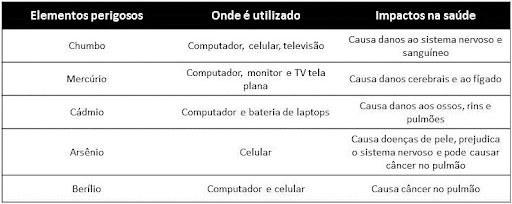

O que é lixo eletrônico?
Todos os dispositivos eletrônicos descartados, como celulares, computadores, tablets, televisores, eletrodomésticos, fios e outros equipamentos eletrônicos. Ou seja, se vai na tomada, tem pilha ou bateria, é eletrônico.
Importante: Lixo é aquilo que não serve para mais nada. Já o resíduo é tudo que pode ser reaproveitado.
Então, em vez de jogar tudo na lixeira, separe seus resíduos eletrônicos e verifique o destino correto. Ajude o meio ambiente!
Saiba mais em: Programa Caminhos da Reportagem: Logística reversa
Legislação
- Lei Nº 12.305/2010 - Instituiu a Política Nacional de Resíduos Sólidos (PNRS).
- Decreto Federal Nº 10.240/2020 - Implementação de sistema de logística reversa de produtos eletroeletrônicos e seus componentes de uso doméstico.
O Decreto nº 10.240/2020 regulamenta a logística reversa de eletroeletrônicos domésticos no Brasil e é considerado um divisor de águas para a cadeia de reciclagem e a PNRS.
Por que é importante reciclar e destinar corretamente o lixo eletrônico?
Resíduos eletroeletrônicos possuem metais perigosos que podem causar graves problemas ambientais se descartados incorretamente (UFSC).
*Imagem obtida no site gestaoderesiduos.ufsc.br
5 razões para cuidar do destino de seu lixo eletrônico:
- Reduz contaminação do meio ambiente.
- Preserva recursos naturais ao reutilizar materiais.
- Evita proliferação de doenças causadas por contaminação do solo.
- Beneficia toda a sociedade com o descarte correto.
- Gera renda e emprego em diversas indústrias.
Dados e estatísticas sobre lixo eletrônico
- O lixo eletrônico cresceu de 34 bilhões de kgs (2010) para 62 bilhões de kgs (2022).
- No Brasil, apenas 3% dos 2.2 bilhões de kgs de lixo eletrônico produzidos são reciclados.
- Principais itens descartados: câmeras, brinquedos, micro-ondas e cigarros eletrônicos.
- 49% das pessoas descartam eletrônicos junto do lixo reciclável, segundo a Green Elétron.
Onde descartar em Florianópolis
Confira locais com coleta de lixo eletrônico em Florianópolis, divididos por região e tipo de material.
Por região:
- Norte da Ilha:
- Canasvieiras - ECOPONTO COMCAP: Rua Hypólito Gregório Pereira, 345
- Rio Vermelho - ECOPONTO COMCAP: Rua Joaquim Neves, 120
- Ingleses - ECOPONTO COMCAP: Avenida Armando Calil Bulos, 900
- Sul da Ilha:
- Morro das Pedras - ECOPONTO COMCAP: Avenida Campeche, 230
- Centro:
- Prainha - ECOPONTO COMCAP: Rua Conselheiro Mafra, 455
Por tipo de material:
- CPUs e componentes
- ECOPONTOS da COMCAP
- Samsung - Loja oficial: Rua das Flores, 123
- Baterias e pilhas
- Lojas Americanas
- Supermercado Angeloni
- Celulares e tablets
- Claro, Vivo, TIM e Oi - Todas as lojas possuem pontos de coleta.